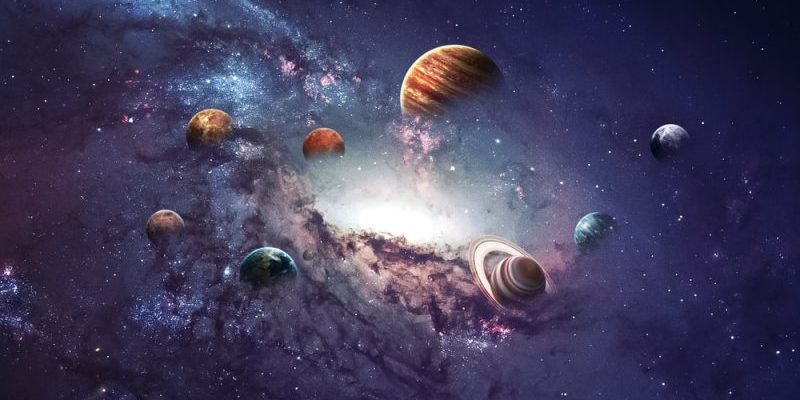

| 1-. | ¿Que es la Astronomia? |
La astronomía (del latín astronomĭa, y este del griego ἀστρονομία) es la ciencia que se ocupa del estudio de los cuerpos
celestes del universo, incluidos los planetas y sus satélites, los cometas y meteoroides, las estrellas y la materia
interestelar, los sistemas de materia oscura, gas y polvo llamados galaxias y los cúmulos de galaxias; por lo que estudia
sus movimientos y los fenómenos ligados a ellos. La astronomía también abarca el estudio de la formación y el desarrollo
del Universo en su conjunto mediante la cosmología, y se relaciona con la física mediante la astrofísica y la química
mediante la astroquímica. |
|
|  | |
Video |
|

Astrono Chile
| 2-. | Astronomia en Chile |
|
Ha sido desarrollada en su zona del Norte Grande y Chico, principalmente en el desierto de Atacama, reconocido como el mejor
lugar de la Tierra para observar el firmamento y extender esta ciencia, debido a sus condiciones climáticas y geográficas
—tales como baja humedad, altas cumbres y planicies—, además de baja contaminación lumínica y radioeléctrica. Esta combinación
de factores generan el mayor número de noches despejadas al año en el planeta. |
|
Video |
|
| 3-. | Astroturismo |
| El astroturismo o astronomía turísitica ha sido desarrollada y operada en Chile por diversas insituciones, agrupaciones e intereses privados. En 2015 se contabilizó en Chile 25 observatorios turísticos, 24 centros de alojamiento que ofrecen servicio de astronomía turística y medio centenar de operadores que ofertan tours relacionados con el tema. A este recuento se suman diez observatorios científicos o profesionales que cuentan con programas de visitas para público general. La oferta privada en este rubro en 2013 se encontraba disponible entre la Región de Antofagasta por el norte y la Región del Biobío por el sur. En esa fecha el 51 % de las empresas particulares relacionadas con el sector se emplazaban en la Región de Coquimbo. Además de empresas privadas, participan en la astronomía turística diversas comunas o corporaciones municipales, que han desarrollado u operan observatorios destinados a este tipo de labor. Es el caso del primer proyecto denominado en Chile expresamente como "astronomía turística", el Observatorio Cerro Mamalluca, que, tras ser impulsado por particulares y voluntarios, terminó siendo administrado por el Municipio de Vicuña, (Región de Coquimbo). En la misma región surgió después por iniciativa del Municipio de Combarbalá el Observatorio Cruz del Sur. También son públicos los observatorios turísticos Collawara de Andacollo, surgido por iniciativa municipal y administrado por una red de alojamientos locales, y el Observatorio Inca de Oro, en Diego de Almagro (Región de Atacama). En 2015 diversas instituciones públicas y privadas, como el Servicio Nacional de Turismo (SERNATUR), la Subsecretaría de Turismo, Comité de Inversiones Extranjeras (CIE-Chile), Universidad Católica de Chile, European Southern Observatory (ESO) y Sociedad Chilena de Astronomía (Sochias) entre otras, mandataron la realización de un proyecto denominado "Astroturismo Chile", con el fin de desarrollar un catastro de la actividad, implementar "buenas prácticas" e impulsar el fomento del sector, considerado como una herramienta de divulgación y de desarrollo local.3233 Anteriormente SERNATUR había ya implementado en la Región de Coquimbo la denominada "Ruta de las Estrellas", con énfasis en esta temática, que fue promocionada por el organismo como una entre las principales ocho rutas turísticas del país. En este mismo ámbito, diversos destinos chilenos han sido certificados por la española Fundación Startlight como lugares que cuentan con cielos de calidad para la observación astronómica, además de prácticas adecuadas de conservación y protección de dicha calidad. El Parque Nacional Fray Jorge (Región de Coquimbo), fue el primero de estos lugares en ser certificado a nivel sudamericano, en 2013. En 2014 le siguieron en la certificación Pampa Joya, Mano del Desierto y Alto Loa (Región de Antofagasta). La actividad "astroturística" ha sido apoyada en Chile por la comunidad de astrónomos profesionales, a través de la Sociedad Chilena de Astronomía, que considera esta área económica como una herramienta de divulgacióm y apoyo a la educación científica. |
|
Video |
|
| 4-. | Universidades |
Los astrónomos y estudiantes de astronomía profesional se encuentran repartidos en departamentos, programas o grupos de investigación y/o docencia en astronomía dependientes de 11 universidades del país: Universidad de Chile: Primer centro de enseñanza e investigación de la astronomía en Chile. Es la institución responsable de haber atraído el interés e inversión de universidades y organismos internacionales, firmando los respectivos convenios, que permitieron la instalación de grandes observatorios en el Norte de Chile a partir de la década del 60 del siglo XX. Cuenta con un Departamento de Astronomía. Instaló el primer radiotelescopio de Chile en Maipú, posteriormente desmantelado. Opera directamente el Observatorio Astronómico Nacional, en Cerro Calán, y el Observatorio de Cerro El Roble. Cuenta con un laboratorio de ondas milimétricas en el que se diseñan y construyen receptores destinados a radioastronomía, junto a un taller mecánico de montaje de telescopios ópticos. Mantiene programas de licenciatura, magíster, doctorado y grupos de investigadores en la modalidad de postdoctorados. Universidad Católica de Chile: Cuenta con un Instituto de Astrofísica. Mantiene programas de licenciatura, magíster, doctorado y grupos de investigadores postdoctorados. Opera directamente un observatorio docente en Hacienda Santa Martina y mantiene el observatorio histórico "Manuel Foster" (Lick) en el cerro San Cristóbal. Universidad de Concepción: Mantiene un Departamento de Astronomía, con programas de licenciatura, magíster, doctorado y grupos de investigadores postdoctorados. Cuenta con el pequeño Observatorio Wangulenmapu, destinado a la docencia y extensión, además de un laboratorio de radioastronomía. Universidad de Valparaíso: Realiza docencia, investigación y extensión, a través de su Instituto de Física y Astronomía, con programas de licenciatura, magíster, doctorado y grupos de investigadores postdoctorados. La investigación avanzada se realiza a través de un organismo dependiente, llamado Centro de Astrofísica de Valparaíso. Universidad Católica del Norte: Realiza docencia, investigación y extensión a través de su Instituto de Astronomía, con programas de licenciatura, magíster e investigadores en modalidad de postdoctorados. Cuenta con un observatorio docente y de divulgación denominado Sirius, en la ciudad de Antofagasta, operando directamente también el Observatorio Cerro Armazones en conjunto con la Universidad Ruhr de Bochum (Alemania). Ambas universidades utilizan también de manera dedicada un telescopio de 1 m del Observatorio La Silla. Universidad de La Serena: Realiza docencia, investigación y extensión a través de su Grupo de Astronomía, dependiente de su Departamento de Física y Astronomía, con programas de licenciatura, magíster y grupos de investigadores en modalidad de postdoctorados. Opera, en conjunto con la Academia de la Fuerza Aérea de Estados Unidos, un telescopio robótico en el Observatorio Mamalluca, como parte de un programa de investigación del espacio cercano a la Tierra. Universidad Andrés Bello: Realiza docencia, investigación y extensión, con programas de licenciatura, magíster y doctorado (enlace roto disponible en Internet Archive; véase el historial y la última versión)., tiene 10 académicos y similar cantidad de Postdocs. Realiza investigación en las áreas de astronomía estelar y extragaláctica, desarrollando modelos y simulaciones de formación, machine learning y preparación para la era de los grandes datos. Universidad de Antofagasta: Realiza investigación, extensión y docencia a través de su Unidad de Astronomía, de la que depende un incipiente Centro de Astroingeniería (2015). Cuenta con dos observatorios propios: Ckoirama (telescopio de 60 cm) ubicado en el desierto con fines de investigación y extensión, y el más pequeño Naira, ubicado en la ciudad. No otorga grados en astronomía. Universidad Diego Portales: En 2013 esta universidad abrió un Núcleo de Astronomía, que realiza investigación con un grupo de 4 académicos y 6 investigadores posdoctorados. El núcleo también realiza extensión y otorga un "diploma de honor" en astronomía a estudiantes de diversas carreras de pregrado que sigan tres cursos introductorios. No otorga grados en astronomía. Universidad Católica de Valparaíso: A través de su Instituto de Física realiza investigación en astrofísica y participa del Instituto Milenio de Astrofísica. No otorga directamente grados en astronomía. Universidad de Tarapacá: Cuenta con un académico doctorado en astronomía y planes para instalar un observatorio (Suma Wara) con fines docentes y de extensión. No otorga grados en astronomía. |
|
Video |
|
| 5-. | Agencias Espaciales |
La Administración Nacional de la Aeronáutica y del Espacio, más conocida como NASA (por sus siglas en inglés, National Aeronautics and Space Administration), es la agencia del gobierno estadounidense responsable del programa espacial civil, así como de la investigación aeronáutica y aeroespacial. En 1958, el presidente Dwight Eisenhower fundó la Administración Nacional de la Aeronáutica y del Espacio (NASA)5 con una orientación de marcado carácter civil, en lugar de militar, fomentando las aplicaciones pacíficas de la ciencia espacial. El 29 de julio de 1958 se aprobó la National Aeronautics and Space Act (Ley Nacional del Espacio y la Aeronáutica), desestabilizando así el antecesor de la NASA, el Comité Consultivo Nacional para la Aeronáutica (NACA). El 1 de octubre de ese año comenzó a funcionar la nueva agencia. Desde entonces la mayoría de los esfuerzos de exploración espacial de Estados Unidos han sido dirigidos por la NASA, incluyendo las misiones Apolo de aterrizaje en la Luna, la estación espacial Skylab y más tarde el transbordador espacial. Actualmente, la NASA está apoyando la Estación Espacial Internacional y supervisando el desarrollo del vehículo multiuso de tripulación Orión, el sistema de lanzamiento espacial y vehículos Commercial Crew Development (tripulados comerciales). La agencia también es responsable del Programa de Servicios de Lanzamiento (LSP), que presta servicios de supervisión de las operaciones de lanzamiento y la gestión de la cuenta regresiva para lanzamientos no tripulados de la NASA. La ciencia que emplea la NASA se centra en una mejor comprensión de la Tierra a través del Sistema de Observación de la Tierra (EOS), avanzar en la heliofísica mediante los esfuerzos del Programa de Investigación en Heliofísica de la Dirección de Misiones Científicas, explorar cuerpos por todo el sistema solar con misiones robóticas avanzadas como la New Horizons10 e investigar cuestiones de astrofísica como el Big Bang a través de los Grandes Observatorios y programas asociados.11 La NASA comparte información con diversas organizaciones nacionales e internacionales, como en el caso del satélite Ibuki de la Agencia Japonesa de Exploración Aeroespacial. |
|
 | |
Video |
|